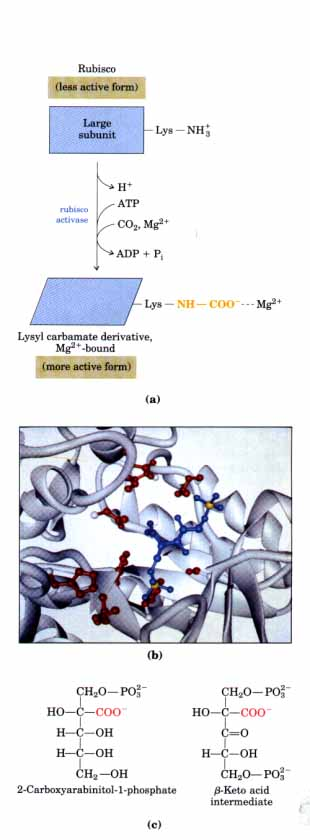
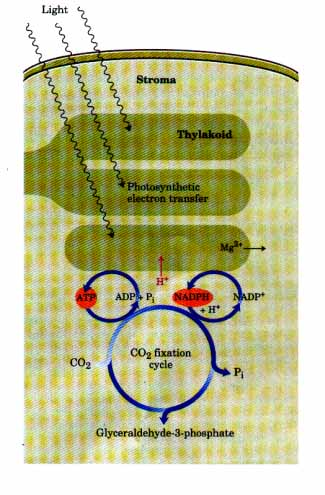
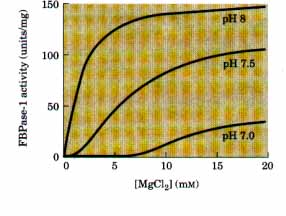
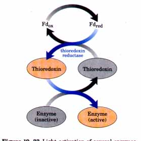
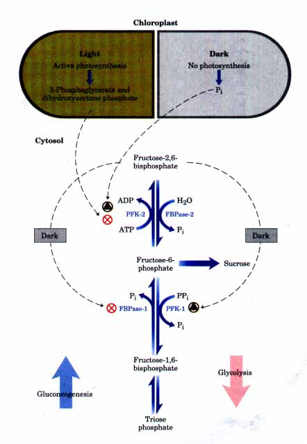
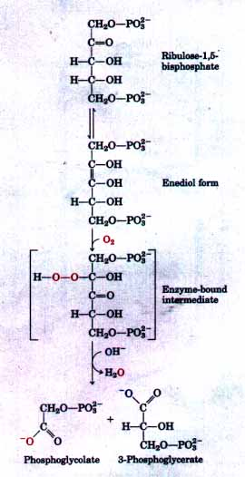
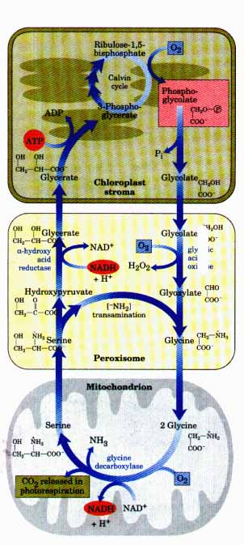
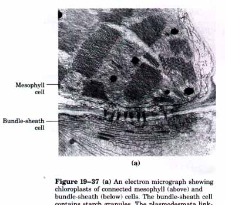
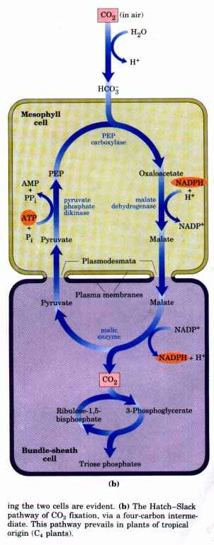

| Carbohydrate metabolism in plant cells
is more complex than in animal cells or nonphotosynthetic
microorganisms. In addition to the universal pathways of
glycolysis and gluconeogenesis, plants have the unique
reaction sequences for CO2 reduction to triose phosphates
and the associated reductive pentose phosphate
pathway-all of which must be coordinately regulated to
avoid wasteful futile cycling and to ensure proper
allocation of carbon to energy production and synthesis
of starch and sucrose. One level of coordination is
achieved by light activation of certain enzymes
associated with the carbon-fixing reactions of
photosynthesis. Some enzymes are activated by changes in
pH that result from light-induced proton movements; some
enzymes are activated by reduction of disulfide bonds
involved in their catalytic activity, using electrons
flowing from photosystem I; other enzymes are subject to
more conventional allosteric regulation by one or more
metabolic intermediates. The compartmentation of
metabolic sequences in organelles also contributes to the
regulation of carbohydrate metabolism. We will end with a discussion of another reaction catalyzed by rubisco, the condensation of O2 with ribulose-1,5-bisphosphate. This is the starting point for a process called photorespiration, which greatly affects the efficiency of carbon fixation in plants. Rubisco Is Subject to Both Positive and Negative RegulationAs the site where photosynthetic CO2 fixation is initiated, rubisco is a prime target for regulation. One type of regulation involves the carbamylation of a Lys residue (Fig. 19-30a, b). At high CO2 levels this occurs nonenzymatically. However, the substrate for this enzyme, ribulose-1,5-bisphosphate, inhibits carbamylation, and this effect is almost complete at physiological CO2 concentrations. An enzyme called rubisco activase overcomes this inhibition and promotes an ATPdependent activation of rubisco that results in carbamylation. The mechanism of activation is unknown, and it is not clear why ATP is required. |
 Figure 19-30 Regulation of rubisco. (a) Activation of rubisco by formation of a carbamate derivative of a Lys residue at the active site. The reaction is catalyzed by the enzyme rubisco activase. (b) The active site of rubisco from the bacterium Rhodospsrillum rubrum. The substrate-binding site is occupied here by an inhibitor, 2-carboxy-D-arabinitol-1,5bisphosphate (blue), that was cocrystallized with the enzyme. The amino acid side chains that interact with the bound inhibitor are shown in red. (c) The naturally occurring transition-state analog 2-carboxyarabinitol- 1 -phosphate, compared here with the β-keto acid intermediate (see Fig. 19-20) of the rubisco reaction. This analog is quite similar to the inhibitor shown bound to the enzyme in (b). |
Rubisco is also inhibited by 2-carboxyarabinitol-1-phosphate, a naturally occurring transition-state analog (see Box 8-3) with a structure similar to that of the β-keto acid intermediate of the rubisco reaction (Figs. 19-20, 19-30c). This compound is synthesized in the dark by some plants to depress rubisco activity, and it is sometimes called the "nocturnal inhibitor." It is broken down when light returns, permitting a reactivation of rubisco.
The reductive fixation of CO2 requires ATP and NADPH, and their stromal concentrations increase when chloroplasts are illuminated (Fig. 19-31). The light-induced transport of protons across the thylakoid membrane (Chapter 18) also makes the stromal compartment alkaline and is accompanied by a flow of Mg2+ out of the thylakoid compartment into the stroma. Several stromal enzymes have evolved to take advantage of these light-dependent conditions that signal the availability of ATP and NADPH; they have pH or Mg2+ optima that are better suited to alkaline conditions and high [Mg2+]. Activation of rubisco by formation of the lysyl carbamate is faster at alkaline pH, and high stromal [Mg2+] favors formation of the active Mg2+ complex. Fructose-1,6-bisphosphatase requires Mg2+ and is very dependent upon pH (Fig. 19-32). Its activity increases by a factor of more than 100 when the pH and [Mg2+ ]rise during chloroplast illumination.
 Three other enzymes essential to the Calvin cycle's operation are subject to another type of regulation by light. Ribulose-5-phosphate kinase, fructose-1,6-bisphosphatase, and sedoheptulose-1,7-bisphosphatase can exist in either of two forms, differing in the oxidation state of Cys residues essential to their catalytic activity. When these Cys residues are oxidized as disulfide bonds, the enzymes are inactive; this is the normal situation in the dark. With illumination, electrons flow from photosystem I to ferredoxin (see Fig. 18-44), which passes electrons to a small, soluble, disulfide-containing protein called thioredoxin (Fig. 19-33). Thioredoxin donates electrons for the reduction of the disulfide bridges of these light-activated enzymes and is then reactivated in a disulfide-exchange reaction catalyzed by thioredoxin reductase. Gluconeogenesis and Glycolysis Are Reciprocally Regulated in PlantsThe possibility of futile cycling by the simultaneous operation of glycolysis and gluconeogenesis exists in plants as in animals. Plant cells (the chloroplast stroma and cytosol) have all the enzymes of glycolysis, and during dark periods glycolytic breakdown of starch is a major source of energy. During periods of illumination, photosynthetic plant cells produce the triose phosphate intermediates common to glycolysis and gluconeogenesis, and convert these into hexoses, sucrose, and starch as we have just seen. Futile cycling through these two paths is prevented in plants by the regulation of key enzymes of each cytosolic pathway by fructose-2,6-bisphosphate, whose concentration reflects the level of photosynthetic activity. The concentration of fructose-2,6-bisphosphate varies inversely with the rate of photosynthesis in higher plants (Fig. 19-34). The enzyme phosphofructokinase-2, responsible for fructose-2,6-bisphosphate synthesis, is inhibited by dihydroxyacetone phosphate or 3-phosphoglycerate and stimulated by Pi. During active photosynthesis, dihydroxyacetone phosphate is produced and Pi is consumed, resulting in inhibition of PFK-2 and lowered concentrations of fructose2,6-bisphosphate. |
Figure 19-31 ATP and NADPH produced by the light reactions are essential substrates for the reduction of CO2; their availability limits the rate of CO2 fixation. The photosynthetic reactions that produce ATP and NADPH are accompanied by movement of protons (red) from the stroma into the thylakoid, creating alkaline conditions in the stroma. Mg2+ ions pass from the thylakoid into the stroma, increasing the stromal [Mg2+].  Figure 19-32 Activation of spinach chloroplast fructose-1,6-bisphosphatase (FBPase-1) by pH and Mg2+. The combination of high pH and high [Mg2+] in the stroma, both of which are produced by illumination, strongly stimulates the activity of this gluconeogenic enzyme.  Figure 19-33 Light activation of several enzymes of the Calvin cycle is mediated by thioredoxin, a small, disulfide-containing protein. In the light, thioredoxin is reduced by electrons from ferredoxin (Fd) (blue arrows), then reduces critical disulfides of sedoheptulose-1,7-bisphosphatase, fructose-1,6bisphosphatase, and ribulose-5-phosphate kinase, thereby activating these enzymes. |
 |
Figure 19-34 The concentration of the allosteric regulator fructose-2,6-bisphosphate in plant cells is regulated by the products of photosynthetic carbon fixation and by P;. Dihydroxyacetone phosphate and 3-phosphoglycerate produced by CO2 fixation inhibit phosphofructokinase-2 (PFK-2), the enzyme that synthesizes the regulator; Pi stimulates that enzyme. The concentration of the regulator is therefore inversely proportional to the rate of photosynthesis. In the dark, the concentration of fructose-2,6-bisphosphate increases and stimulates the glycolytic enzyme PPi-dependent phosphofructokinase-1 (PFK-1), while inhibiting the gluconeogenic enzyme fructose-1,6-bisphosphatase (FBPase-1). When photosynthesis is active (in the light), the concentration of the regulator drops and the synthesis of fructose-6-phosphate and sucrose is favored. FBPase-2 represents fructose-2,6bisphosphatase. |
As in animals (Figs. 19-7, 19-8), fructose-2,6-bisphosphate in plants is an activator of glycolysis and an inhibitor of gluconeogenesis (Fig. 19-34). It slows gluconeogenesis by inhibiting the cytosolic fructose-1,6-bisphosphatase, which catalyzes a rate-limiting step in the synthesis of fructose-6-phosphate. It stimulates glycolysis by activating the PP; dependent form of phosphofructokinase-1 (p. 435); this enzyme, a critical control point in glycolysis, is virtually inactive in the absence of fructose-2,6-bisphosphate.
Thus, when photosynthesis ceases, the concentration of fructose2,6-bisphosphate rises, stimulating glycolysis and inhibiting gluconeogenesis; glycolysis (combined with mitochondrial oxidative phosphorylation) provides energy in the dark. In the light, the fructose-2,6bisphosphate concentration drops, glycolysis is inhibited, gluconeogenesis is turned on, and the energy and precursors produced by photosynthesis are used to make hexoses to be transported as sucrose or stored as starch.
In most plant cells, triose phosphates produced during CO2 fixation are converted primarily to sucrose and starch. The balance between these processes is tightly regulated, and both processes must be coordinated with the rate of carbon fixation. Communication and coordination between sucrose synthesis in the cytosol and carbon fixation and starch synthesis in the chloroplast are mediated by the Pi-triose phosphate antiport system. If sucrose synthesis is too rapid, the transport of the excess Pi into the chloroplast will result in the removal of too much triose phosphate; this will have a deleterious effect on the rate of carbon fixation because five of every six triose phosphate molecules produced in the Calvin cycle are needed to regenerate ribulose-1,5bisphosphate and complete the cycle. If sucrose synthesis is too slow, insufficient Pi will be made available to the chloroplast for triose phosphate synthesis.
| Sucrose synthesis is regulated primarily
at three steps, those catalyzed by
fructose-1,6-bisphosphatase, sucrose-6-phosphate
synthase, and sucrose phosphate phosphatase. When light
first strikes a leaf in the morning, triose phosphate
levels in the cytosol (derived from carbon fixation in
the chloroplast) rise. The triose phosphates inhibit the
activity of phosphofructokinase-2, and the levels of
fructose-2,6bisphosphate fall. This releases the
inhibition of fructose-1,6bisphosphatase, permitting the
synthesis of fructose-6-phosphate and thus other hexose
phosphates, including glucose-6-phosphate.
Glucose-6-phosphate is an allosteric activator of
sucrose-6-phosphate synthase. Sucrose phosphate
phosphatase catalyzes the final step in sucrose synthesis
as its substrate becomes available. The key regulatory enzyme in starch synthesis is ADP-glucose pyrophosphorylase (Fig. 19-16), which is indirectly activated as cytosolic sucrose levels rise. Sucrose-6-phosphate synthase and sucrose phosphate phosphatase are both inhibited to some degree by sucrose. This inhibition becomes effective as sucrose levels increase, leading to an increase in the cytosolic pool of hexose phosphates that effectively sequesters much of the available phosphate in a form that cannot be transported back to the chloroplast. The levels of free Pi in the cytosol, and the resulting decrease in the activity of the Pi-triose phosphate antiporter, lead to a decrease in Pi and an increase in three-carbon compounds in the chloroplast. ADP-glucose pyrophosphorylase is inhibited by Pi and stimulated by 3-phosphoglycerate, so that one effect of the increase in cytosolic sucrose concentration is an increase in starch synthesis in the chloroplast. In the steady state, all of these activities are balanced so that sucrose and starch synthesis each consume about 50?0 of the triose phosphate produced during carbon fixation, and the rates of both processes are regulated so that precursors and intermediates required for carbon fixation are maintained at optimal levels. |
 Figure 19-35 The oxygenase activity of ribulose1,5-bisphosphate carboxylase/oxygenase (rubisco) results in the incorporation of O2, not CO2, into ribulose-1,5-bisphosphate. The unstable intermediate thus formed splits into phosphoglycolate, which is recycled as described in Fig. 19-36, and 3-phosphoglycerate, which can reenter the Calvin cycle. |
Rubisco is not absolutely specific for CO2 as a substrate; O2 competes with CO2 at the active site, and rubisco catalyzes the condensation of O 2 with ribulose-1,5-bisphosphate to form one molecule of 3-phosphoglycerate and one of phosphoglycolate (Fig. 19-35). This is the enzyme's oxygenase activity, evident in its name: RuBP carboxylase/oxygenase. The metabolic function of this reaction is not clear. It results in no fixation of carbon and appears to be a net liability to the cell in which it occurs; salvaging the carbons from phosphoglycolate, which is not a useful metabolite, uses cellular energy. The condensation of 02 1with ribulose-1,5-bisphosphate occurs concurrently with C02 fixation, with the latter predominating by a factor of about three.
The salvage pathway (Fig. 19-36) involves the conversion of two molecules of phosphoglycolate into a molecule of serine (which has three carbons) and a molecule of C02. The oxygenase activity of rubisco combined with the salvage pathway consumes 02 and produces CO2, a process called photorespiration. Unlike mitochondrial respiration, however, this process does not conserve energy
| Apparently the evolution of rubisco
produced an active site not able to discriminate well
between CO2 and O2, perhaps because much evolution
occurred before O2 was an important component of the
atmosphere. The Km for CO2 is about 20μM, and for O2
is about 200 μM. (A solution that is in equilibrium with
air at room temperature contains about 10 μM CO2 and 250
μM O2.) The modern atmosphere contains about 20% O2 and
only 0.04% CO2, proportions that allow O2
"fixation" by rubisco to constitute a
significant waste of energy. During photosynthesis CO2 is
consumed in the fixation reactions, altering the CO2 to
O2 ratio in the air spaces around the leaf in favor of
O2. In addition, the affinity of rubisco for CO2
decreases with increasing temperature, exacerbating the
tendency of the enzyme to catalyze the wasteful oxygenase
reaction. Photorespiration may inhibit net biomass
formation as much as 50%. As we shall see, this has led
to adaptations in the process by which carbon fixation
takes place, particularly in plants that live in warm
climates. Some Plants Have a Mechanism to Prevent Photorespiration Most plants in the tropics, as well as temperate-zone crop plants native to the tropics, such as corn, sugar cane, and sorghum, have evolved a mechanism to circumvent the problem of wasteful photorespiration. The ultimate step of CO2 fixation into a three-carbon product, 3-phosphoglycerate, is preceded by several steps, one of which is a preliminary fixation of CO2 into a compound with four carbon atoms. These plants are referred to as C4 plants. Plants in which the first step in carbon fixation is reaction of CO2 with ribulose-1,5-bisphosphate to form 3-phosphoglycerate-as we have described thus far-are called C3 plants. |
 Figure 19-36 The pathway by which phosphoglycolate (shaded red) formed during photorespiration is salvaged by conversion into serine and thus 3-phosphoglycerate. This path is long and involves three cellular compartments. Glycolate formed by dephosphorylation of phosphoglycolate in chloroplasts is transaminated to glycine in peroxisomes. In mitochondria, two glycine molecules condense to form serine and the CO2 released during photores piration (shaded green). This reaction is catalyzed by glycine decarboxylase, an enzyme present at very high levels in the mitochondria of C3 plants (see text above). The serine is converted to glycerate in peroxisomes, then reenters the chloroplasts to be phosphorylated, rejoining the Calvin cycle. Oxygen is consumed during photorespiration, in three steps (shaded blue). |
C4 plants, which typically grow in high light intensity and temperatures, have several important characteristics: high photosynthetic rates, high growth rates, low photorespiration rates, low rates of water loss, and an unusual leaf structure. Photosynthesis in the leaves of C4 plants involves two cell types: mesophyll and bundle-sheath cells (Fig. 19-37). There are three known patterns of C4 metabolism. The best-understood pathway, worked out in the 1960s by two plant biochemists, Marshall Hatch and Rodger Slack, is described here.
In plants of tropical origin the first intermediate in which 14CO2 is fixed is not 3-phosphoglycerate but oxaloacetate, a four-carbon compound. This reaction, which occurs in leaf mesophyll cells (Fig. 19-37), is catalyzed by phosphoenolpyruvate carboxylase:
Phosphoenolpyruvate + HCO3-- ==== oxaloacetate + Pi
This enzyme does not occur in animal tissues and is not to be confused with phosphoenolpyruvate carboxykinase (p. 603), which catalyzes the gluconeogenic reaction
Oxaloacetate + GTP ===== phosphoenolpyruvate + CO2 + GDP
The oxaloacetate formed in the mesophyll cells is reduced to malate at the expense of NADPH:
Oxaloacetate + NADPH + H+; L-malate +NADP+
| Alternatively, oxaloacetate may be
converted to aspartate by transamination: Oxaloacetate + α-amino acid ===== L-aspartate + α-keto acid The malate or aspartate formed in the mesophyll cells, which contains the fixed CO2, is transferred into the neighboring bundle-sheath cells via specialjunctions (plasmodesmata; p. 49) between the cells (Fig. 1937). In the bundle-sheath cells the malate is oxidized and decarboxylated to yield pyruvate and CO2 by the action of malic enzyme: L-Malate + NADP+ ===== pyruvate + CO2 + NADPH + H+  Figure 19-37 (a) An electron micrograph showing chloroplasts of connected mesophyll (above) and bundle-sheath (below) cells. The bundle-sheath cell contains starch granules. The plasmodesmata linking the two cells are evident. (b) The Hatch-Slack pathway of CO2 fixation, via a four-carbon intermediate. This pathway prevails in plants of tropical origin (C4 plants). |
 |
In plants that employ aspartate as the carrier of CO2, aspartate is first transaminated to form oxaloacetate then reduced to malate in bundlesheath cells before the release of CO22 by malic enzyme. The free CO2 formed in the bundle-sheath cells is the same CO2 molecule that was originally fixed into oxaloacetate in the mesophyll cells.
In the bundle-sheath cells the CO2arising from the decarboxylation of malate is fixed again (Fig. 19-37), this time by rubisco, in exactly the same reaction that occurs in C3 plants, leading to incorporation of CO2 into the C-1 of 3-phosphoglycerate. The pyruvate formed by the decarboxylation of malate in the bundle-sheath cells is transferred back to the mesophyll cells, where it is converted into PEP by an unusual enzymatic reaction, catalyzed by the enzyme pyruvate phosphate dikinase:
Pyruvate + ATP + Pi======= phosphoenolpyruvate + AMP + PPi
This enzyme is called a dikinase because two different molecules are simultaneously phosphorylated by one molecule of ATP: pyruvate is phosphorylated to PEP, and phosphate is phosphorylated to pyrophosphate. The pyrophosphate is subsequently hydrolyzed to phosphate, so two high-energy phosphate groups of ATP are used in regenerating PEP. The PEP is now ready to fix another molecule of CO2 in the mesophyll cell.
The PEP carboxylase of mesophyll cells has a high affinity for HCO3-- and can fix CO2 more efficiently than can rubisco. Unlike rubisco, PEP carboxylase does not use O2 as an alternative substrate, so there is no competition between CO2 and O2 with this enzyme. This reaction serves to fix and concentrate CO2 in the form of malate. Release of CO2 from malate in the bundle-sheath cells yields a sufficiently high local concentration of CO2 for rubisco to function near its maximal rate, with relatively little of the competitive side reaction with O2.
Once CO2 is fixed into 3-phosphoglycerate in the bundle-sheath cells, all the other reactions of the C3 or Calvin cycle take place exactly as described earlier (Figs. 19-20, 19-22, 19-23). Thus in C4 plants the mesophyll cells carry out CO2 fixation by the C4 pathway, but starch and sucrose biosynthesis occur by the C3 pathway in the bundle-sheath cells.
The pathway of CO2 fixation in C4 plants has a greater energy cost than in C3 plants. For each molecule of CO2 fixed in the C4 pathway, a molecule of PEP must be regenerated at the expense of two highenergy phosphate groups of ATP. Thus C4 plants need a total of five ATPs to fix one molecule of CO2, whereas C3 plants need only three. As the temperature increases (and the affinity of rubisco for CO2 decreases, as noted above), a point is reached at about 28° to 30°? where the gain in efficiency from the elimination of photorespiration in C4 plants more than compensates for this energetic cost. C4 plants (crabgrass, for example) outgrow most C3 plants during the summer, as any experienced gardener can attest!